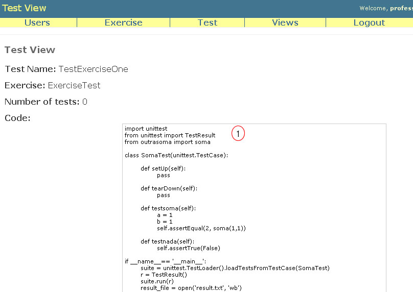
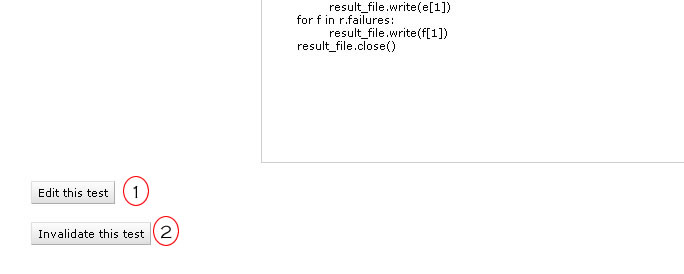

Test View
You must access this page by the link in at the name of test in List Test page.

In this page you can see one more time the name of test, the name of associated exercise, the number of tests (number of test methods) and you can see the code of test.
There are two buttons at the end of page (figure bellow) that permit edit (1) and annul (2) this test.

Only the teacher and the assistants can see the details of tests.